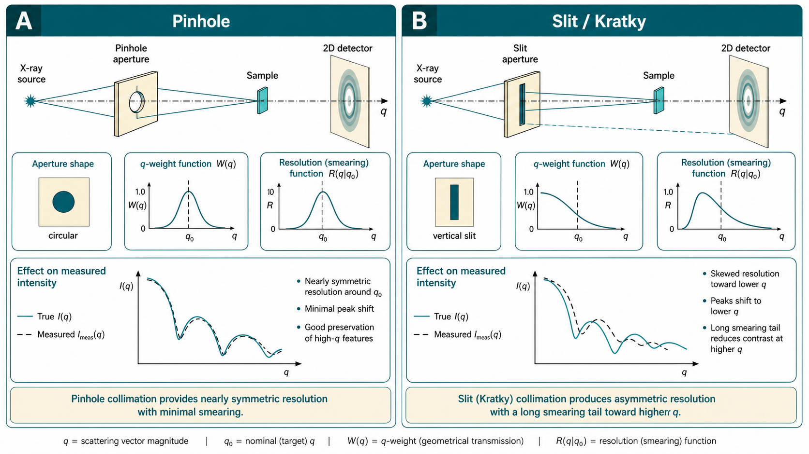

03 · 仪器与几何
Instrumentation and beam geometry
导语：仪器不是「透明管道」
理想实验希望得到真实的微分截面 $d\sigma/d\Omega$。现实仪器在有限通量下必须在分辨率与强度之间妥协：更严的准直带来更窄的$q$ 分布，但到达样品的光子/中子数锐减。Pedersen（1995）在仪器综述开篇即指出，测得的 $I(q)$ 往往是真实截面与仪器权重函数的卷积——即 smearing（模糊）。
本章目标：理解透射与掠入射几何、实验室与同步辐射/中子源束线的典型配置、针孔与 Kratky 狭缝的差异，以及这些选择如何影响你能测到的 $q$ 范围与数据解释。数据还原与绝对标定留待第 04–05 章；这里聚焦「光路长什么样」。
Jeffries 2021 将经典 SAS 光路概括为：源 → 光学元件（能量、形状、准直）→ 样品 → 2D 探测器；USAXS/GISAXS 等变体在样品后或入射角上增加额外光学环节。任何环节都会改变有效 $q$ 分布与仪器模糊——测得的从来不是「理想 $d\sigma/d\Omega$」，而是其与仪器权重函数的卷积。
透射几何：经典 SAS 布局
绝大多数溶液与块体 SAS 采用透射几何：入射束穿过样品，二维探测器记录以直射束为中心的散射图样。Jeffries 2021 描述的「经典布局」包含：
- 源：X 射线管、同步辐射弯铁/波荡器，或反应堆/散裂中子源；
- 单色与准直：单色器、狭缝或针孔，定义波长 $\lambda$ 与束发散；
- 样品：毛细管、石英池、固体片等；
- 束阻（beamstop）：遮挡直射束，保护探测器；
- 探测器：记录 $I$ 随位置分布，换算为 $I(q)$。
Pedersen 给出的对称 SAXS 示意强调：前两道狭缝定义入射方向，第三道「guard slit」抑制第二狭缝的寄生散射；样品紧贴 guard slit 之后，光路常抽真空以减少空气散射与吸收。
 SAXS 仪器光路：源、准直、样品、飞行管、束阻、探测器" width="900">
SAXS 仪器光路：源、准直、样品、飞行管、束阻、探测器" width="900">
对稀释生物样品，寄生散射在束阻附近须低至直射束的 $10^{-4}$–$10^{-5}$，否则极低 $q$ 数据不可用——这直接限制可测的前向散射下限。
Pedersen（1995）强调对称布局中入射束监测器（monitor）应置于光路前段，记录入射通量涨落，使散射强度与源漂移解耦；监测器本身亦须避免向样品方向产生寄生散射。样品紧贴 guard slit 之后、飞行管抽真空，是为压低空气散射与吸收——未抽真空时，低 $q$ 本底可抬高 1–2 个数量级。
| 光路元件 | 主要功能 | 配置失误的典型后果 |
|---|---|---|
| 单色器 | 选定 $\lambda$、$\Delta\lambda/\lambda$ | 高 $q$ 谱宽过大；荧光本底（边沿能量） |
| 准直狭缝 / 针孔 | 定义发散 $\Delta\theta$ | $q$ 分辨率差；通量不足 |
| Guard slit | 遮挡第二狭缝寄生散射 | 低 $q$ 抬高；Guinier 失真 |
| 束阻 | 保护探测器、定义 $q_{\min}$ | $q_{\min}$ 过高；或探测器损坏 |
| Monitor | 归一化入射通量 | 重复测量不可比 |
分辨率与通量的根本权衡
理想仪器需要完美准直与完美单色；有限源强迫使放宽条件。Pedersen 归纳两类主要放宽策略：
- X 射线长狭缝（Kratky / line collimation）： 匹配线聚焦 X 射线管，在狭缝窄方向积分，换取通量，但 $q$ 分布变宽（非对称拖尾）。
- 中子波长展宽： 对白谱中子用速度选择器，允许 $\Delta\lambda/\lambda$ 达 10–20%，在针孔几何下仍获足够通量。
一阶估算：波长展宽导致
$$ \Delta q \approx -q\,\frac{\Delta\lambda}{\lambda} $$准直发散导致（小角近似）
$$ \Delta q \approx \frac{4\pi}{\lambda}\,\Delta\theta $$后者与 $q$ 无关，而前者随 $q$ 增大——故高 $q$ 端谱宽常由 $\Delta\lambda/\lambda$ 主导。分析数据时须么去模糊，要么对模糊后的模型拟合。
Pedersen 给出各向同性样品的 smearing 积分形式：测得 $I(q)$ 为真实截面在 $q_\parallel$、$q_\perp$、$\lambda$ 上的加权积分，权重函数 $W$ 来自狭缝几何、探测器分辨与波长分布。针孔相机可用 Gaussian 分辨率函数解析组合；Kratky 长狭缝则产生非对称拖尾（Fig. 1–2, Pedersen 1995）——固定「中心 $q$」处实际探测到一族偏低 $q$ 值。
算例： SANS 针孔、$\Delta\lambda/\lambda=20\%$ 时，Pedersen 示意的 $q$ 分布显著宽于 X 射线实验室源（$\Delta\lambda/\lambda \sim 1\%$）。在 $q=0.2$ Å$^{-1}$ 拟合球体 $P(q)$ 振荡时，若忽略 smearing，第一极小位置可偏移 5–15%，$\chi^2$ 系统性偏高。
- 先定 $q$ 需求： 目标结构尺度 $d \sim 2\pi/q$；Guinier 区至少需 $q_{\min} \lesssim 1/R_g$。$q_{\min}$ 由束阻尺寸、样品–探测器距离 $L$ 与准直发散共同决定，不是软件可调参数。
- 估算谱宽预算： 对 Cu K$\alpha$（$\lambda=1.54$ Å），$\Delta\theta=0.1$ mrad 时 $\Delta q \approx 0.0016$ Å$^{-1}$；若 $\Delta\lambda/\lambda=2\%$，在 $q=0.5$ Å$^{-1}$ 处 $\Delta q \approx 0.01$ Å$^{-1}$——高 $q$ 常由波长展宽主导。
- 选准直策略： 各向同性稀溶液 + 需绝对标定 → 针孔；弱散射生物样品 + 可接受 smearing → Kratky；中子白谱 → 针孔 + 宽 $\Delta\lambda/\lambda$（10–20%）是常见组合。
- 曝光与统计： 通量加倍 ≠ 分辨率加倍；若拟合 $R_g$ 精度要求 $\pm 5\%$，Guinier 区相对误差应 $\lesssim 2\%$——弱信号时优先延长曝光或换高亮源，而非无限收窄狭缝。
- 分析端对齐： 记录仪器 smearing 函数（狭缝几何、$\Delta\lambda/\lambda$）；拟合前确认软件是否对模型做 smearing 卷积，避免「理想模型 + 模糊数据」。
针孔相机 vs Kratky 狭缝相机
针孔（pinhole）准直
点源 + 针孔给出近似平行束，散射角与探测器像素位置一一对应，$I(q)$ 解释最直接。实验室针孔相机多用 Cu、Mo、Ag 靶（$\lambda \approx 1.54$、0.71、0.59 Å）；同步辐射针孔束线可聚焦至微米级束斑，配合像素阵列探测器做高通量筛选。
优点：几何简单，各向同性样品数据处理标准。缺点：通量低于 Kratky，弱散射样品曝光时间长。
Kratky 线准直
入射束呈线状（可视为无穷多个横向排列的点源），相邻点的散射在探测器上错位叠加，测得曲线为真实 $I(q)$ 与线几何权重的卷积。Kratky 相机照亮样品体积更大，对轻元素（生物分子）有利。
Pedersen 图 1–2 对比：长狭缝几何下，固定「中心 $q$」实际探测到一族偏低的 $q$ 拖尾；针孔几何分布近似对称。对稀溶液各向同性样品，去模糊算法成熟；各向异性或薄膜样品则困难得多。

| 特性 | 针孔（pinhole） | Kratky 狭缝（line collimation） |
|---|---|---|
| $q$ 分辨率 | 高，各向同性对称 | 低 $q$ 较锐，高 $q$ 非对称拖尾 |
| 通量 / 照明体积 | 较低（点束） | 较高（线照明，体积 $\sim$ 线长） |
| 数据解释 | 直接，2D→1D 环向平均标准 | 须 smearing 校正或 smeared 模型拟合 |
| 绝对标定 | 几何因子明确，一级/二级标定友好 | smearing 校正引入额外不确定度 |
| 各向异性样品 | 可分辨取向差异 | 线方向积分，取向信息丢失 |
| 典型场景 | 同步辐射、USAXS、定量比较 | 实验室生物 SAXS 经典配置 |
实验室 vs 同步辐射：选型决策表
仪器选择不是「同步辐射一定更好」——取决于样品散射强度、时间分辨需求与可及性。下表给出常见决策维度：
| 决策维度 | 优先实验室 SAXS | 优先同步辐射 SAXS |
|---|---|---|
| 样品散射强度 | 浓溶液、高衬度颗粒、薄膜（$\Delta\rho$ 大） | 稀生物溶液（$\Delta\rho \sim 10^{-6}$ Å$^{-2}$）、弱散射复合物 |
| 样品量 / 通量 | 毫克级常规筛选可接受数小时曝光 | 微升级、微流控、需秒级采集 |
| $q$ 范围 | 单距离覆盖 1–2 个数量级通常足够 | 需 SAXS+WAXS 联测、USAXS 延伸极低 $q$ |
| 能量 / 衬度 | 固定 Cu/Mo 靶，ASAXS 不可行 | 能量扫描优化 $\Delta\rho$、元素特异 ASAXS |
| 时间分辨 | 分钟–小时动力学 | 停流、混合、泵浦探测（ms–μs） |
| 辐射损伤敏感样品 | 低通量，损伤慢，适合初筛 | 高通量但损伤快——须流动池/子曝光/低温 |
| 定量 / 跨台站比较 | 针孔台式机 + 玻璃碳定期复标可行 | 绝对标定成熟，但几何改变须复标 |
数值直觉：密封管实验室源亮度 $\sim 10^6$ ph/(s·mm²·mrad²·0.1%BW)，同步辐射弯铁束线 $\sim 10^{12}$–$10^{14}$ ph/s——相差 $10^5$–$10^7$ 倍；稀生物样品（$I/I_0 \sim 10^{-6}$）在实验室上 Guinier 区统计常需数小时至一夜，同步辐射可压缩至秒–分钟。
Jeffries 2021 补充：近年 MetalJet 等实验室源可达 $\sim 10^9$ ph/s、束斑 $\sim 100$ μm²，使稀聚合物/蛋白溶液分钟级采集成为可能；但 $q_{\min}$ 与绝对标定精度仍通常不及同步辐射多距离布局。
USAXS 与极低 $q$
当结构尺度迈向 0.1–10 μm（相分离域、晶界、大孔隙），常规 SAXS 的 $q_{\min}$ 不足。USAXS 在样品后采用 Bonse–Hart 双晶等光学元件，以极高角度分辨率筛选散射角，可探 $q \lesssim 0.01$ nm$^{-1}$（$d \gtrsim 0.6$ μm）。代价是：额外光学吸收通量、对准苛刻，且仍可能有 desmearing 需求。Jeffries 指出，同步辐射高亮度是 USAXS 可行关键——实验室 USAXS 多限于高衬度硬材料。
USAXS 与常规 SAXS 数据 merge 时，重叠 $q$ 区须统一绝对强度、分辨函数与背景模型（第 04 章）；各向异性样品 merge 更复杂。
实验室 SAXS 源与组件
实验室源主要包括：
- 密封管（~2 kW）：Kratky 标配，亮度 $\sim 10^6$ ph/(s·mm²·mrad²·0.1%BW)；
- 旋转阳极（10–100 kW）：更高通量，束斑可小至 0.1 mm；
- 金属喷射源（MetalJet）：液态金属靶，近年实验室高亮度方案。
样品厚度常取 $t \approx 1/\mu$（$\mu$ 为线吸收系数），在透射与吸收间折中。Zn 等元素的 K 吸收边附近（~10 keV）可能产生强荧光背景——选能须避开或接受本底惩罚。
组件链：源 → 单色（石墨、多层膜或晶体）→ 准直狭缝 → 样品 → 真空飞行管 → 束阻 → 探测器（CCD 闪烁屏或像素阵列 PAD）。现代 PAD（Eiger、Pilatus 等）具备高动态范围与单光子计数，是同步辐射与高端实验室台站主流。
样品厚度： Pedersen 与 Kratky 传统建议透射 $T \approx e^{-\mu t} \approx 1/e$，即 $t \approx 1/\mu$ 时散射信号与吸收折中。算例：水相蛋白池对 Cu K$\alpha$，$t \sim 1$–2 mm 常见；过厚（$T<0.7$）使体散射权重偏向靠近出射面的一层，$I(q)$ 形状畸变。SANS 中子穿透深，池厚可达 cm，但须防多重散射（$T \gtrsim 0.8$–0.9 为经验起点）。
同步辐射 SAXS 束线
电子储存环提供比实验室高 $10^5$–$10^7$ 的亮度，且束斑、能量可调。Jeffries 2021 强调同步辐射的独特能力：
- 微束与高通量筛选： $10^{12}$–$10^{14}$ ph/s，稀样品、微流控进样；
- 能量扫描： 优化衬度与吸收，支持 ASAXS（元素特异）；
- 时间分辨： 毫秒至微秒（停流、混合、泵浦探测）；
- 宽 $q$ 覆盖： 多探测器距离、可变波长，SAXS+WAXS 联测。
典型 $q$ 覆盖约两个数量级（如 0.05–5 nm$^{-1}$）；USAXS 光学（Bonse–Hart 双晶）可探 $q < 0.01$ nm$^{-1}$，对应微米级结构，但需极高通量才能穿透额外光学元件。
辐射损伤是同步辐射 SAXS 的主要样品风险：须分次测量、流动样品池或低温。Pedersen 亦提醒：强束可导致生物样品化学环境改变，须用子曝光检查一致性。
ASAXS（异常小角散射）： 同步辐射可调能量至特定元素吸收边附近，$\Delta\rho$ 对该元素贡献急剧变化，从而「点亮」金属离子、重原子标签等。Jeffries 2021 举例： metalloprotein 中的金属、DNA 上的离子、表面活性剂胶束中的反离子。实验室固定 Cu/Mo 靶无法做 ASAXS——这是同步辐射的独有维度，与通量并列。
SANS 仪器要点
中子源分反应堆（连续谱）与散裂源（脉冲，时间飞行 ToF）。中子经慢化剂调节动能，速度选择器或 ToF 定义 $\lambda$ 与 $\Delta\lambda/\lambda$。
Jeffries 2021 对比：反应堆提供连续中子流，散裂源为脉冲多色束，ToF 在单距离上展开宽 $q$ 但还原需处理时间–能量关联。通量约 $10^7$–$10^{15}$ cm$^{-2}$ s$^{-1}$，比 X 射线低数个数量级；补偿手段是更大束斑、更长曝光、更厚样品（在多重散射可控前提下）。中子深穿透使剪切池、高温炉、磁场等复杂样品环境成为 SANS 强项。
与 SAXS 对比的关键差异：
| 项目 | SANS 特点 |
|---|---|
| 通量 | 显著低于 X 射线；曝光更长，样品量更大 |
| 穿透 | 深，适合厚样品、复杂样品环境（剪切、磁场） |
| 本底 | $^1$H 不相干散射强；氘代与空泡本底控制关键 |
| $q$ 覆盖 | 常换探测器距离，多段 merge；ToF 单距离宽 $q$ 但还原复杂 |
| 衬度 | H/D 匹配是核心实验设计维度 |
探测器多为 $^3$He 或硼转换型，像素 mm–cm 量级，比 X 射线 PAD 粗糙，但对热中子足够。VSANS/USANS 用磁透镜或 Bonse–Hart 晶体延伸极低 $q$；SESANS 等实空间技术可探数十 μm 尺度（专题规划）。
多距离测量时，各段数据须按样品透射、$q$ 分辨率函数合并——Jeffries 指出 merge 须考虑 $\Delta\lambda/\lambda$、重力、几何与像素尺寸对 $q$ 展宽的贡献。
掠入射几何与 GISAXS
GISAXS（grazing-incidence SAXS）用于薄膜、表面自组装层、纳米线阵列等二维纳米结构。入射角 $\alpha_i$ 接近基底临界角（常 0.1°–1°），束在薄膜平面内路径长，面内$q$ 与面外 $q_z$ 须分开处理：
$$ q_{x,y,z} = \frac{2\pi}{\lambda}\begin{bmatrix} \cos\alpha_f\cos 2\theta_f - \cos\alpha_i \\ \cos\alpha_f\sin 2\theta_f \\ \sin\alpha_f + \sin\alpha_i \end{bmatrix} $$（Jeffries 式 4；符号依坐标系略有差异。）
掠入射时反射、透射与衬底多次散射路径相干叠加，须用畸变波玻恩近似（DWBA） 解释 2D 散射图，而非简单透射 $P(q)S(q)$。有序超晶格出现 Bragg 条纹；条纹位置给晶格参数，强度受形式因子调制。
Jeffries 2021 列出掠入射中的主要散射通道：束在膜内传播散射、衬底反射回膜内再散射、透射至衬底再散射及多重反射——表面缺陷使有效表面形式因子复杂化。Yoneda 峰出现在临界角附近，反映薄膜与衬底电子密度对比；镜面反射峰与条纹随入射角 $\alpha_i$ 移动是 DWBA 指纹，透射 SAS 无此行为。
实验注意：样品台倾角精度（常要求 0.01° 级）、直射束与临界角附近的强反射区束阻、以及表面粗糙度对 DWBA 项的权重。Jeffries 指出掠入射束在膜平面内路径长，信号可强于同厚度透射样——但穿透深度受 $\alpha_i$ 限制，体衬底贡献通常较低。低反射极限（$\alpha_i$ 远低于临界角）下分析有时可退化为类似透射 SAS，但须逐案例验证。
探测器、束阻与 $q$ 标定
无论 SAXS 还是 SANS，从像素到 $q$ 的映射依赖：
- 波长 $\lambda$（或 ToF 反推）；
- 样品–探测器距离 $L$；
- 束心位置与探测器倾斜（球面波校正，高 $q$ 或大像素时重要）。
$q$ 标定常用银二十二酸（silver behenate）等标准样，或已知光栅间距。改变 $L$ 或 $\lambda$ 后须重新标定。
探测器缺陷（热噪、坏点、宇宙线 zingers）须在还原前修正。动态范围须覆盖 $I(q)$ 跨数个数量级的衰减——Guinier 区像素接近束阻，高 $q$ 区计数稀少。
强度标定（绝对 cm$^{-1}$）用纯水、玻璃碳或 NIST SRM3600 等——详见第 05 章；仪器章只需知：没有强度与 $q$ 的双重标定，跨台站比较无意义。
$q$ 标定流程要点： (1) 银二十二酸（AgBe）或已知间距标准样得 $q$ 刻度；(2) 精测 $L$ 与束心；(3) 大像素或近距离时做球面波/几何畸变校正；(4) 改变 $\lambda$、$L$ 或探测器后必须重标定。Jeffries 2021 强调，仪器参数与样品条件须一并记入元数据，否则复现与比对失败。
样品环境与原位测量
SAS 的价值很大程度来自样品环境可扩展性。Jeffries 2021 列举：变温、变压、流动、剪切、反应池、微流控进样等。设计原则：
- 窗口材料（Kapton、石英、蓝宝石）须已知吸收与自身散射，计入背景；
- 复杂池体增加低 $q$ 寄生散射——空池背景测量不可或缺；
- 时间分辨实验须平衡时间分辨率与单帧 SNR（同步辐射子毫秒 vs 实验室分钟）；
- SANS 中 $^1$H 不相干本底强，氘代溶剂与空泡本底控制比 SAXS 更苛刻。
常见坑
- 坑 2：$q_{\min}$ 由束阻硬截断 → 如何判断： Guinier 线性区起始点距束阻阴影仅 2–3 个像素；$I(q)$ 在最低 $q$ 点异常抬高或斜率突变。低于 $q_{\min}$ 的外推不可靠——需 USAXS 或增大 $L$。
- 坑 3：样品太厚/太薄 → 如何判断： 透射 $T < 0.7$ 或 $T > 0.95$ 时体散射权重失真；SAXS 吸收校正后 $I(q)$ 形状仍异常。SANS 过厚（$T < 0.8$）可能出现多重散射——低 $q$ 抬高、Porod 尾变平。
- 坑 4：未抽真空或寄生散射过高 → 如何判断： 空样品架（无样品）在低 $q$ 仍有可测信号；$I_{\mathrm{empty}}(q_{\min})/I_0 > 10^{-4}$。Guinier 区上翘、$R_g$ 偏大。
- 坑 5：GISAXS 当透射 SAXS 解 → 如何判断： 2D 图样出现强镜面峰/Yoneda 峰，但分析时只用环向平均 $I(q_\parallel)$ 且忽略 $\alpha_i$ 依赖。条纹位置随 $\alpha_i$ 移动——这是 DWBA 特征，非 $P(q)$ 单独决定。
- 坑 6：多距离 SANS merge 不当 → 如何判断： 重叠 $q$ 区出现非物理振荡或台阶；各段 $I(q)$ 在 overlap 处偏离 $>5\%$。检查：各段分辨率函数是否一致、权重是否按 $1/\sigma^2$ 过渡。
- 坑 7：只看强度不看误差 → 如何判断： 高 $q$ 区仅 3–5 个有效点且 $\sigma/I > 30\%$，但拟合仍强制过 Porod 尾。应截断不可靠 $q$ 区或合并重复测量以降低统计噪声。
小结
SAS 仪器在「理想分辨率」与「可用通量」之间折中：针孔几何解释直接，Kratky 与波长展宽则用 smearing 换信号。同步辐射 SAXS 强在亮度、可调能量与时间分辨；SANS 强在深穿透与 H/D 衬度。掠入射 GISAXS 把 SAS 拓展到表面与薄膜，但分析框架升级为 DWBA。理解光路后，下一章将讨论如何把探测器图像变成校正过的 $I(q)$。
相关词条
- 散射矢量 q
- 衬度
- 前向散射
- GISAXS
- USAXS
- ASAXS
- 仪器模糊 smearing
- DWBA
- Yoneda 峰
- 绝对强度
延伸阅读
- Instrumentation for Small-Angle Scattering. Jan Skov Pedersen (1995). DOI: 10.1007/978-94-015-8457-9_2
- Small-angle X-ray and neutron scattering. Cy M. Jeffries et al. (2021). DOI: 10.1038/s43586-021-00064-9
- Review of the fundamental theories behind small angle X-ray scattering, molecular dynamics simulations, and relevant integrated application. Lauren Boldon, Fallon Laliberte, Li Liu (2015). DOI: 10.3402/nano.v6.25661